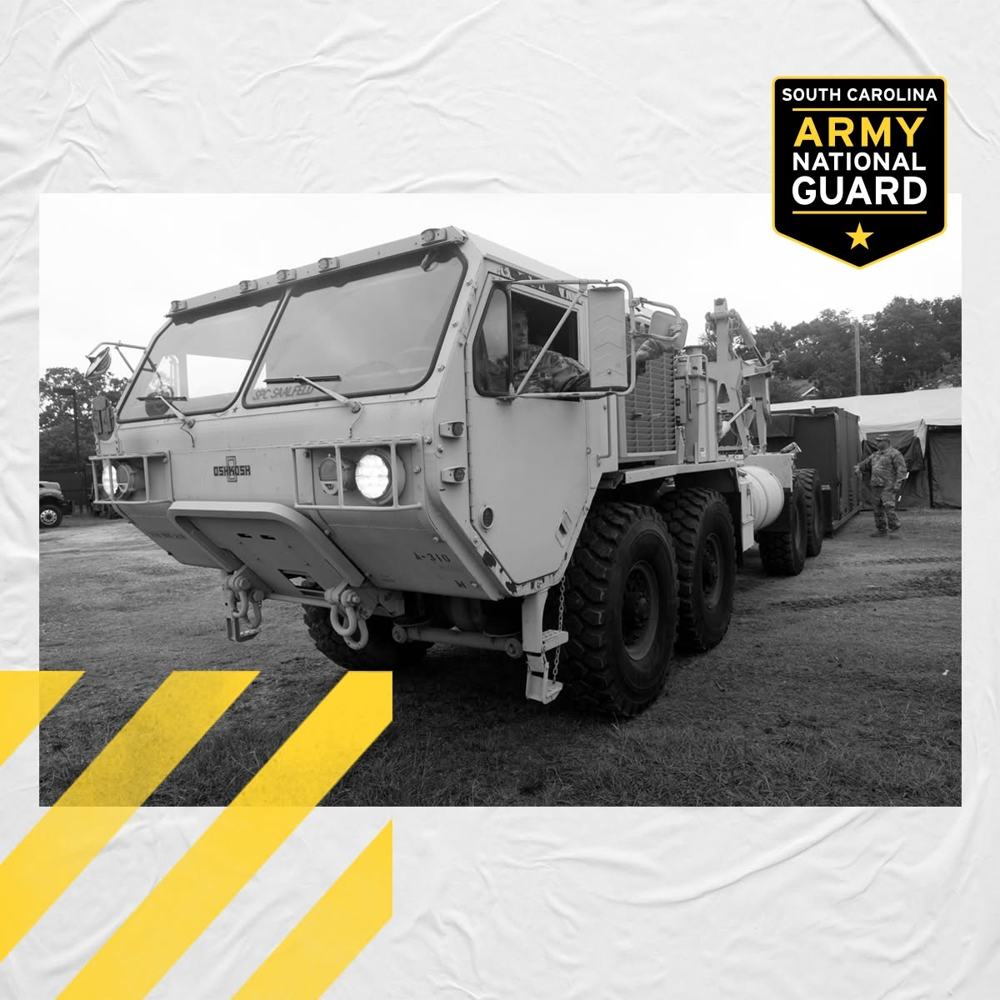

Case study / Recruiting strategy
Give a statewide program a clear direction.
I matched recruiting messages to the people and opportunities in each region, then connected the investment to the statewide mission.
View the work sample ↓A statewide goal needs a plan people can use.
The statewide recruiting plan needed to bring enough qualified applicants into the pipeline to meet the mission, accounting for retention goals and expected attrition. It also had to reflect that different military jobs were available in different parts of South Carolina.
Joining the National Guard is a lifestyle and career decision. The strategy needed to connect that decision to a relevant opportunity an applicant could pursue locally.
What I owned
From 2017 through 2021, I led statewide marketing strategy, budget decisions, a three-person marketing team, and agency and vendor relationships. The program supported 116 recruiters, 50 locations, and three mobile event teams.
I introduced paid social and programmatic media into the mix and connected spending to recruiting and retention goals. The annual marketing budget grew from $250,000 when I arrived to $1.1 million. Evidence of effectiveness helped make the case for that investment.
One regional example: transportation.
I segmented the strategy by audience and geography. In a region with a transportation unit, we used paid social ads about becoming a truck driver and gave local recruiters truck-driver-focused materials.
That choice connected the opportunity in the advertising to a conversation the local recruiter could continue. The regional example shows how the statewide strategy translated into an applicant’s next step.
Follow the lead beyond the click.
We tracked lead progression in a CRM, from the initial lead through qualification and enlistment. That gave us a way to evaluate whether marketing was supporting recruiting goals beyond generating attention.
South Carolina exceeded its recruiting goals each year during 2017–2021. Marketing contributed alongside the recruiters and the wider recruiting effort. In 2020, the National Guard Bureau Strength Maintenance Division selected my annual plan as a blueprint for all 54 states and territories.
Work sample
Make the opportunity tangible.
This supplied transportation-themed graphic illustrates the subject of the regional recruiting example. My responsibility for the piece was design and distribution approval.


Next project
Help members take the next step toward care.